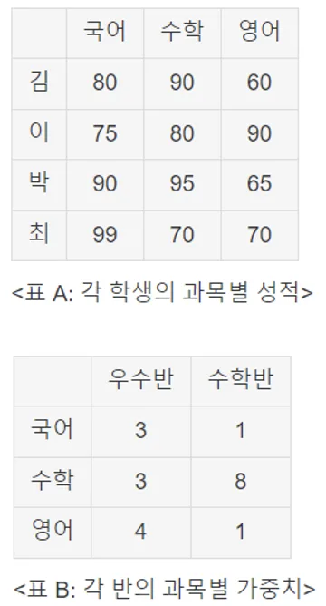

import pandas as pd
data = [10, 20, 30, 40, 50]
series = pd.Series(data)
print(series)import pandas as pd
scores = pd.Series([85, 92, 78, 90, 88])
print("학생 점수:")
print(scores)
print()
#특정 인덱스의 점수 조회
print("첫 번째 학생의 점수:", scores[0])
print("세 번째 학생의 점수:", scores[2])
print()
#최솟값, 최댓값, 평균값 계산
print('최소 점수:', scores.min())
print('최대 점수:', scores.max())
print('평균 점수:', scores.mean())
print()
#점수가 90 이상인 학생들의 인덱스 조회
high_scores_indices = scores[scores>=90].index
print('점수가 90 이상인 학생들의 인덱스', high_scores_indices)import pandas as pd
class Stack:
def __init__(self):
# 빈 시리즈로 스택 초기화
self.stack = pd.Series(dtype='object')
def push(self, value):
# Series에 요소 추가
self.stack = pd.concat([self.stack, pd.Series([value])], ignore_index=True)
print(f'Pushed: {value}')
def pop(self):
if self.stack.empty:
print('Stack is empty!')
return None
else:
value = self.stack.iloc[-1] #마지막 요소 가져오기
self.stack = self.stack.iloc[:-1] # 마지막 요소 제거 (마지막 제외하고 반환)
print(f'Popped: {value}')
return value
def is_empty(self):
return self.stack.empty
def peek(self):
if self.stack.empty:
print('Stack is empty!')
return None
else:
return self.stack.iloc[-1]
def size(self):
return len(self.stack)
my_stack = Stack()
my_stack.push(10)
my_stack.push(20)
my_stack.push(30)
print(f'Stack size:{my_stack.size()}')
print(f'Top element:{my_stack.peek()}')
my_stack.pop()
my_stack.pop()
my_stack.pop()
my_stack.pop()
print(f'Stack size:{my_stack.size()}')
print(f'Is stack empty? {my_stack.is_empty()}')Pushed: 10
Pushed: 20
Pushed: 30
Stack size: 3
Top element: 30
Popped: 30
Popped: 20
Popped: 10
Stack is empty!
Stack size: 0
Is stack empty? Truepd.DataFrame(data, index, columns):import pandas as pd
#데이터 프레임 생성
data = {
'Name' : ['John','Emma',"Liam",'Olivia','Noah'],
'Age' : [25, 28, 24, 27, 26],
'Score' : [85, 92, 78, 90, 88]
}
df = pd.DataFrame(data)
print('데이터프레임:')
print(df)
print()
#head() - 첫 3개의 행 출력
print('첫 3개의 행:')
print(df.head(3))
print()
# describe() - 기술 통계 정보 출력
print('기술 통계 정보: ')
print(df.describe())
print()
# shape - 데이터프레임의 크기 출력
print('데이터프레임의 크기:')
print(df.shape)
print()
# columns - 열 이름 출력
print('열 이름: ')
print(df.columns)
print()
#index - 행 인덱스 출력
print('행 인덱스: ')
print(df.index)
print()
# loc - 특정 행과 열 선택
print('특정 행과 열 선택:')
print(df.loc[2:3, 'Name':'Score'])
print()
# sort_values() - 점수를 기준으로 내림차순 정렬
df_sorted = df.sort_values('Score', ascending=False)
print('점수 기준 내림차순 정렬:')
print(df_sorted)데이터프레임:
Name Age Score
0 John 25 85
1 Emma 28 92
2 Liam 24 78
3 Olivia 27 90
4 Noah 26 88
첫 3개의 행:
Name Age Score
0 John 25 85
1 Emma 28 92
2 Liam 24 78
기술 통계 정보:
Age Score
count 5.000000 5.000000
mean 26.000000 86.600000
std 1.581139 5.458938
min 24.000000 78.000000
25% 25.000000 85.000000
50% 26.000000 88.000000
75% 27.000000 90.000000
max 28.000000 92.000000
데이터프레임의 크기:
(5, 3)
열 이름:
Index(['Name', 'Age', 'Score'], dtype='object')
행 인덱스:
RangeIndex(start=0, stop=5, step=1)
특정 행과 열 선택:
Name Age Score
2 Liam 24 78
3 Olivia 27 90
점수 기준 내림차순 정렬:
Name Age Score
1 Emma 28 92
3 Olivia 27 90
4 Noah 26 88
0 John 25 85
2 Liam 24 78import pandas as pd
import random
#학과, 학번, 성명, 과목 리스트 생성
departments = ['컴퓨터공학','화학공학','생명공학','반도체공학']
student_ids = [202301, 202302, 202303, 202304]
names = ['김학생','이학생','박학생','최학생']
subjects = ['프로그래밍','미적분','물리','화학']
#데이터프레임 생성을 위한 빈 리스트 생성
data = []
#학생별 랜덤 점수 생성 및 학점 부여
for i in range(len(names)):
scores = [random.randint(80,100) for _ in range(len(subjects))]
grades = []
for score in scores:
if score >= 90:
grades.append('A')
elif score >= 80:
grades.append('B')
elif score >= 70:
grades.append('C')
else:
grades.append('F')
#데이터 리스트에 학생 정보 추가
for j in range(len(subjects)):
data.append([departments[i], student_ids[i], names[i], subjects[j], scores[j], grades[j]])
#데이터프레임 생성
df = pd.DataFrame(data, columns=['학과','학번','성명','과목','점수','학점'])
#결과 출력
print(df)import pandas as pd
class StudentManagement:
def __init__(self):
self.df = pd.DataFrame(columns = ['학번','성명','학과','학점'])
def add_student(self,학번,성명,학과,학점):
new_student = pd.DataFrame([{
'학번': 학번,
'성명': 성명,
'학과': 학과,
'학점': 학점
}])
self.df = pd.concat([self.df, new_student], ignore_index=True)
print(f'{성명} 학생이 추가되었습니다.')
def remove_student(self,학번):
if 학번 in self.df['학번'].values:
self.df = self.df[self.df['학번'] != 학번]
print(f'학번 {학번} 학생이 삭제되었습니다.')
else:
print(f'학번 {학번} 학생이 존재하지 않습니다.')
def search_student(self,학번):
if 학번 in self.df['학번'].values:
student = self.df.loc[self.df['학번']==학번]
print(student)
else:
print(f'학번 {학번} 학생이 존재하지 않습니다.')
def display_students(self):
if len(self.df) > 0:
print('전체 학생 목록:')
print(self.df)
else:
print('등록된 학생이 없습니다.')
management = StudentManagement()
management.add_student(20231001, '김철수','컴퓨터공학','A+')
management.add_student(20231002, '이영희','화학공학','B+')
management.add_student(20231003, '박민지','생명공학','A-')
management.add_student(20231004, '최성준','반도체공학','A-')
management.display_students()
management.search_student(20231002)
management.remove_student(20231003)
management.display_students()
import pandas as pd
# 학생들의 점수 데이터 프레임
students_scores = pd.DataFrame({
"국어": [80,75,90,99],
"수학": [90,80,95,70],
"영어": [60,85,65,70],
}, index=['김','이','박','최'])
# 과목별 가중치 데이터 프레임
weights = pd.DataFrame({
"우수반": [3,3,4],
"수학반": [1,4,1]
}, index = ['국어','수학','영어'])
# 행렬 곱 연산
result = students_scores.dot(weights)
# 결과 출력
print('학생별 우수반, 수학반 총점:')
print(result)